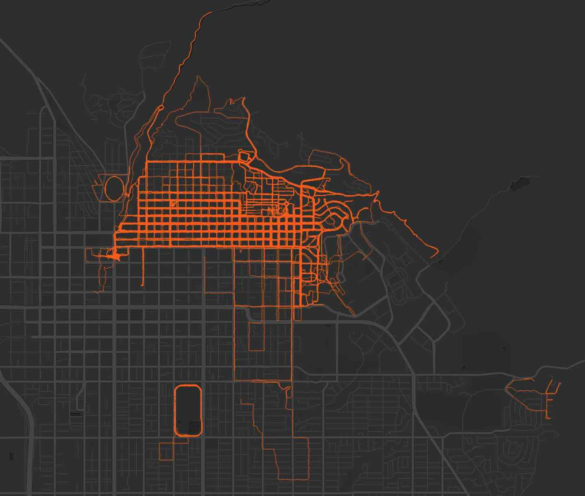
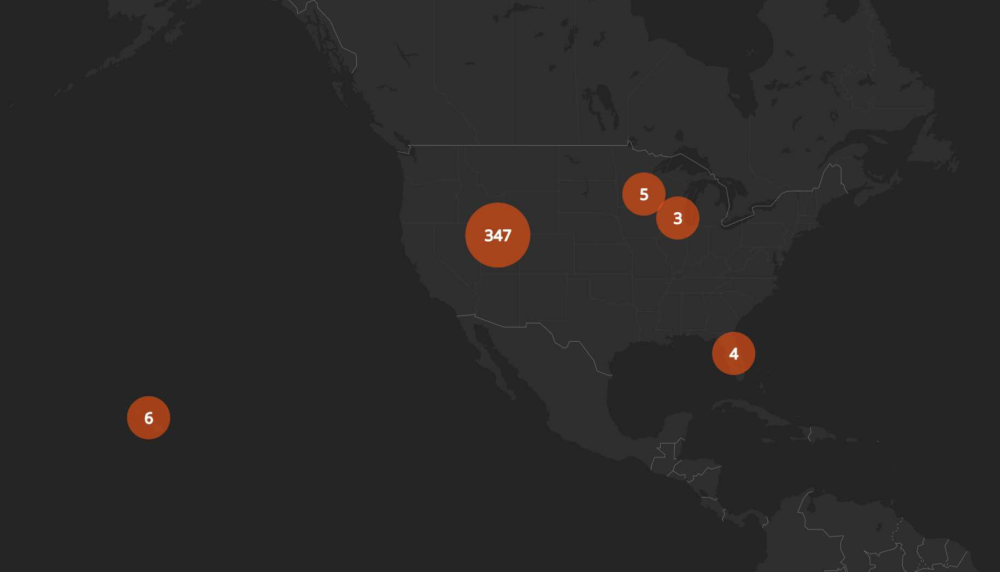

Walking goal completed.
keywords
health2023-12-31
I set a goal at the beginning of 2023: Walk at least three contiguous miles each day of the year. Walk number 1 was on January 1, and today, December 31, I am happy to say that I have just finished walk number 365.
I walked 1,205 miles in total, which used up about 339 hours, or 14 straight days of the year: Time well spent. That’s roughly the equivalent of walking from New York City to Minneapolis via I-80E.

A few people have asked me, why do this? — For a nice, juicy butt, of course!
Actually, I was at a low point in 2022. I spent most of my time and energy worrying. I felt stuck in many ways. The goal was designed to help unstuck myself.
I’ve always enjoyed exercise, and I am a perfectly capable person. However, I developed a mentality to where I no longer believed that I could do “normal” things. It’s hard to explain rationally.
I thought that if I made it a point to walk at least three miles each day, then it could help me feel in charge - or even to feel okay despite discomfort.
Overall, the walking goal is a physical way to challenge uncertainty and doubt. It’s more of an exercise of determination and willpower than an athletic challenge.
I picked walking (as opposed to running, cycling, swimming, etc.) because it’s the most practical and versatile way to be active. My only cheat was that the occasional run could also count toward my walk goal, since the line between run and walk is a bit fuzzy.
Three miles usually takes me about 45 minutes, so it’s a good distance for a daily goal.
No special equipment is required. I can wear the clothes that I already have on. No need to go somewhere special either. I can start walking from nearly anywhere.
My friends and family can come along as they please.
I walk whatever speed that I want. Feeling sick? Just go slow. Feeling bored? Speed-walk.
Here are some of my most memorable walks (ordered chronologically):
Walk number 69. 𝓷𝓲𝓬𝓮.
On walk number 90-something, I finally noticed that the house down the street has a small corner of the foundation made of Lego bricks. It’s easy to miss that kind of detail when you’re going fast.
On April 27 while walking in Liberty Park, my brother called me to let me know that dad’s health had taken a sharp dive.
I left to visit the next day. My family and I took care of him until he passed on a few days later. I still walked during those days, questioning whether it was the right choice, because I wanted to make sure that I was there as much as I could have been.
Walk number 147 on May 27 was one of my favorites. My wife joined me, and we walked 7 miles to celebrate 7 years of marriage.
On July 29, I drove home with midnight approaching. I could see that I would not make it back in time to walk. So, I pulled over and did a bunch of laps around a gas station to complete walk number 210. The Maverik employees became nervous as I circled around them. Maybe they worried that I was casting a spell on them.
On number 224, several family members joined me on a late, Saturday night walk. My mom took a hard fall, and ended up breaking her finger. She insisted on completing the walk. A true champion.
My gallbladder removal surgery was scheduled at 6:30 AM on September 8. I walked at 4:30 AM to make sure the goal was completed for the day. Walk numbers 252 to 258 during the recovery period were terrible. Big sense of accomplishment, though.
Not all walks were enjoyable. Many days I did not feel like walking, but that’s sort of the point.
Did the walks work? How has this changed me? Well, I developed a fear dogs after a few scary encounters, and I carry mace now…
In all reality, you can’t expect to simply walk your problems away, even if you do it 365 times in a row. On the other hand, walking has been a great reminder for me to go ahead and “do things” regardless of how I feel.
I had envisioned my final walk — the coup de grâce number 365 — as a big and special one, but instead, I have COVID.
At some point during the year, I realized that I might as well just keep going. Why stop at 365? I have no reason to stop. I’m making the walk a permanent part of my life.
